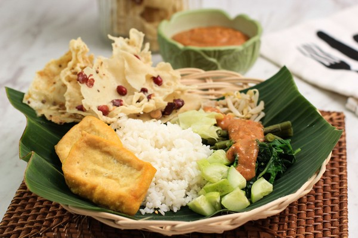

Resep Pecel
Bahan Sayuran:
- 200 gram kacang panjang, potong-potong
- 100 gram bayam
- 100 gram tauge
- 100 gram kol, iris kasar
- 2 buah mentimun, potong kecil
- Air secukupnya untuk merebus
Bahan Bumbu Kacang:
- 200 gram kacang tanah, goreng atau sangrai
- 5 buah cabai merah (sesuaikan dengan selera pedas)
- 3 siung bawang putih
- 2 lembar daun jeruk, buang tulang tengahnya
- 1 ruas kencur
- 50 gram gula merah, sisir halus
- 1 sendok teh asam jawa, larutkan dalam 2 sendok makan air hangat
- Garam secukupnya
- Air hangat secukupnya untuk mencairkan bumbu
Cara Memasak:
- Didihkan air, rebus sayuran seperti kacang panjang, bayam, tauge, dan kol secara terpisah hingga matang. Angkat dan tiriskan. Jangan lupa untuk merendam sayuran dengan air dingin agar warnanya tetap segar.
- Haluskan kacang tanah goreng, cabai merah, bawang putih, kencur, daun jeruk, gula merah, dan garam. Bisa menggunakan ulekan atau blender. Tambahkan air asam jawa, lalu aduk hingga bumbu menjadi pasta.
- Sebelum disajikan, cairkan bumbu pecel dengan air hangat sedikit demi sedikit hingga mencapai kekentalan yang diinginkan.
- ata sayuran rebus di atas piring. Siram dengan bumbu pecel yang telah dicairkan. Tambahkan tempe, tahu, kerupuk, atau lontong sebagai pelengkap.
Tips:
- Jika suka rasa pedas, tambahkan lebih banyak cabai merah atau cabai rawit.
- Bumbu pecel yang kental bisa disimpan di wadah kedap udara dan tahan beberapa hari di kulkas.